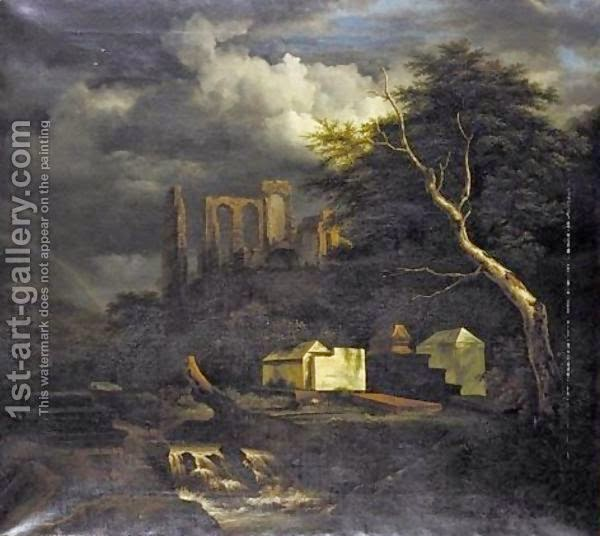

Moed Katan 5 - Marking the graves
Although - as we have mentioned - many labors are restricted on the holiday weekdays, nevertheless the works that are needed by the public are permitted. For example, one can repair the roads and mark the graves.
It was customary to mark graves with lime, so that those who are eating the priestly portion (terumah) would stay away and not become ritually impure. One of the hints for this custom is in the words of Ezekiel, " When one sees a human bone, he will make a marker near it ." (Ezekiel was talking about the soldiers of the army of Gog). The Talmud quotes many other allusions to this custom.
The markers were made at some distance from the grave, so that passers by do not step on the place of ritual impurity but are warned beforehand. They are not placed too far though, so as not to take away from the land where one can travel safely. Cemeteries need not be marked, because that is obvious, however, alleys leading to them might be marked, since occasionally people will be on the way to bury their dead, run out of time, due either to nightfall or to the approach of Shabbat, and bury the dead in such an alley.
Art: The Jewish Cemetery At Oudekerk On The Amstel by Jacob Van Ruisdael